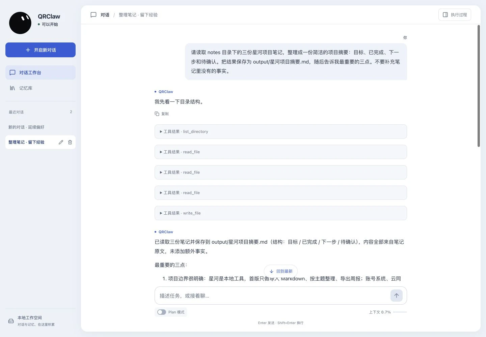
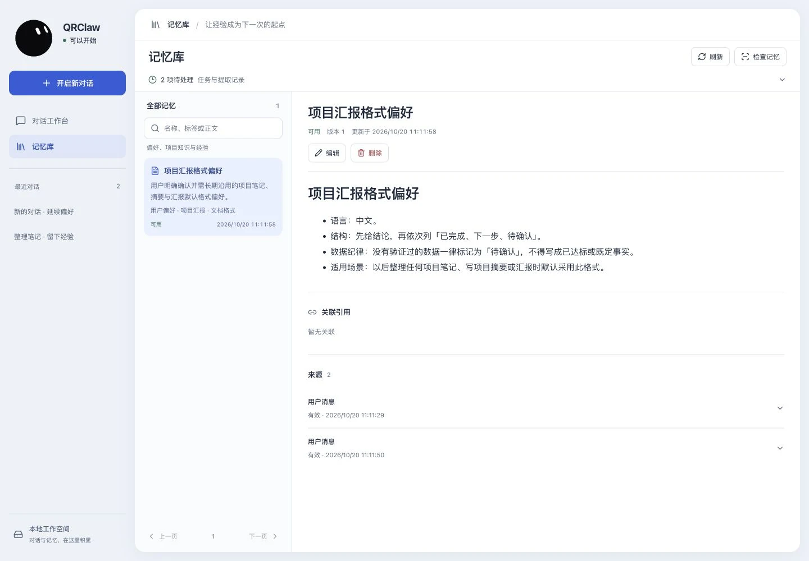

Wiki / 输出偏好记忆示意
先给结论，再讲依据。
你偏好简洁的中文摘要：先说明结论，再列出依据与待办。后续任务可以检索这条偏好，减少重复交代。
来源可追溯
关联到提出这项偏好的原始对话
可以查看、编辑、删除。
记忆提取有触发条件，重要信息也可主动保存。
简单任务直接执行，复杂工作可以开启 Plan。
从工具调用到最终回复，过程始终有迹可循。

在独立演示工作空间中，整理项目笔记并输出工作摘要。
01 / 03项目背景、输出偏好、技术决策。
QRClaw 用 Wiki 把值得保留的内容串起来，让下一次工作有据可依。
点击节点，探索记忆关联 · 内容示意
你偏好简洁的中文摘要：先说明结论，再列出依据与待办。后续任务可以检索这条偏好，减少重复交代。
关联到提出这项偏好的原始对话
可以查看、编辑、删除。
记忆提取有触发条件，重要信息也可主动保存。

连接 MCP 服务，按任务查找工具与参数。可用能力由你的配置决定。
把任务知识和执行约定整理为技能，在需要时读取并使用。
将独立子任务交给子 Agent，在主工作台查看进展与结果。
在浏览器里工作，在终端里交流，
也可以连接支持 OpenAI 兼容接口的客户端。
uv run qrclaw serve
# 浏览器打开
# http://127.0.0.1:8765git clone --branch dev-webui https://github.com/xiaofu2000/qrclaw.git
cd qrclaw
uv sync
uv run qrclaw --help首次运行会创建配置文件。此命令使用与官网演示一致的 dev-webui 分支。
llm:
api_key: "你的 API Key"
model: "openai/deepseek-flash"
base_url: "https://api.deepseek.com"以上为配置示例；模型名称和接口地址以服务商文档为准。
uv run qrclaw serve然后访问 http://127.0.0.1:8765，开始第一项任务。
QRClaw 的程序、工作空间、会话和记忆保存在本地。模型推理取决于你配置的服务；连接远程模型 API 时，相关请求会发送给服务商。联网工具也会访问外部服务。
QRClaw 的源码使用 MIT 开源许可。模型 API、你接入的第三方服务或部署资源可能产生费用，由对应服务商收取。
不会把每句话都存为长期记忆。自动提取会在满足轮数、闲置时间或正文长度等条件后执行，再由模型判断哪些信息值得保留。你也可以明确要求保存重要信息，并在记忆库查看、修改或删除。
可用能力包括文件处理、Shell、网页工具、记忆与接入的 MCP 工具，具体取决于配置。CLI 和本机 API 会自动执行工具调用；默认 Agent 未启用 Docker 沙箱，请在信任任务来源的环境中使用。
可以。QRClaw 提供 OpenAI 兼容 API，本地默认地址是 http://127.0.0.1:8765/v1，模型名为 qrclaw-agent。若开放到非本机地址，需要配置访问令牌和相应访问控制。